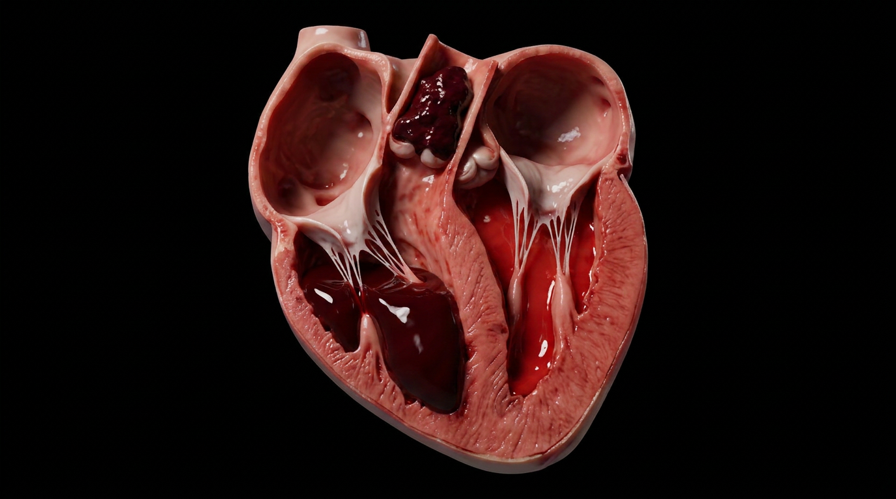
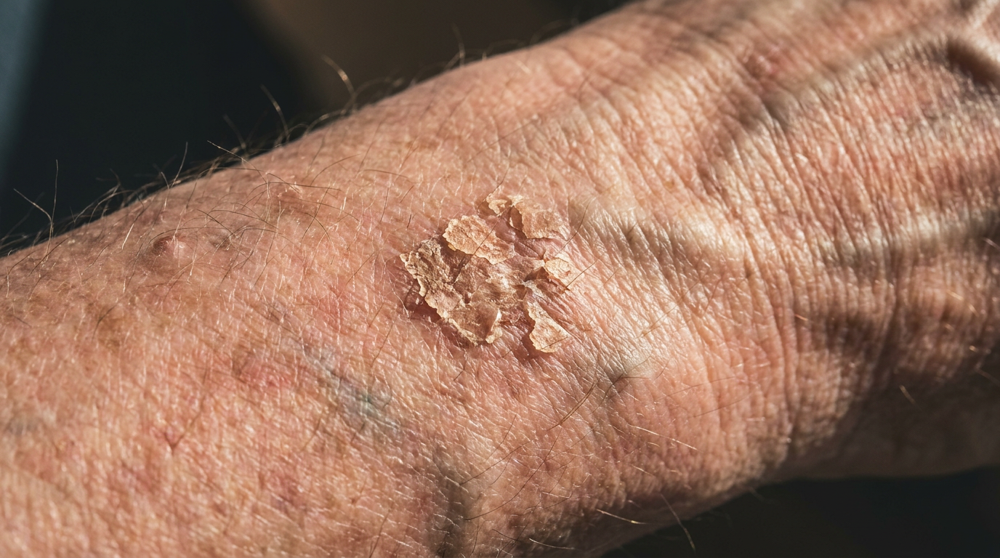
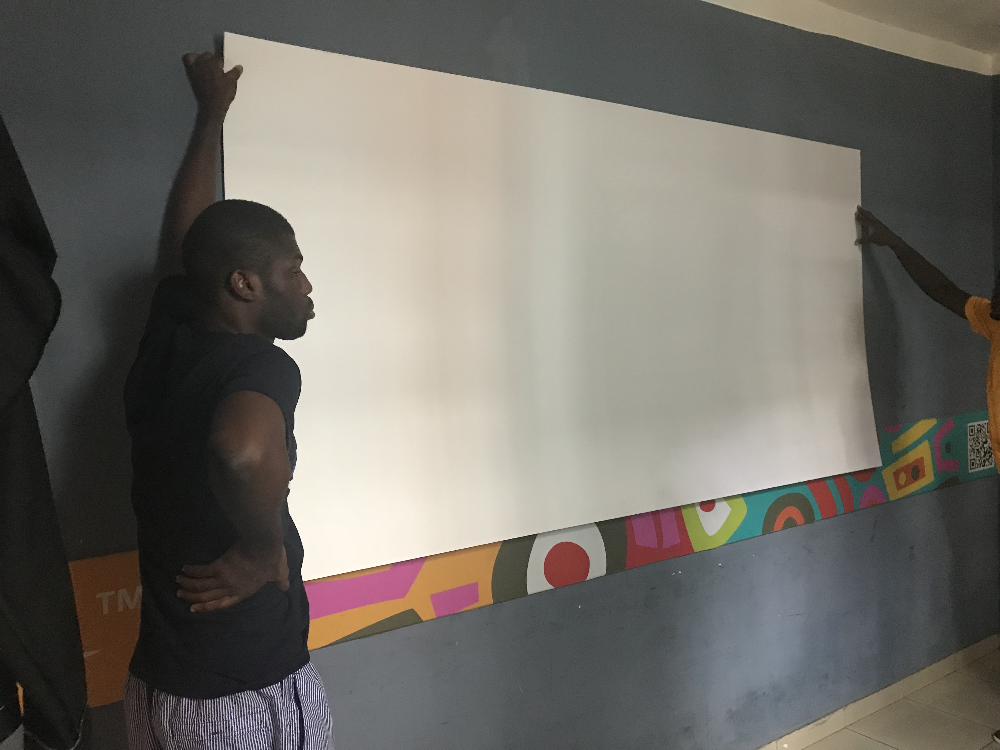

Medical Illustration
I am a physician, a medical illustrator, and a pathologist-track candidate. I trained at KNUST in Ghana, diagnosed follicular thyroid carcinoma via FNA as a house officer, and passed USMLE Step 1 and Step 2 CK. I have illustrated surgical pathology for academic publishers while working as an EMT in New Jersey emergency departments. Read more
I am just a curious six-year-old at heart who believed in my dreams and pursued them passionately. I have explored the worlds of artistic anatomy, human biology, and medicine, and I happen to love both, by the way. What you see here now is the result of decades of practice.
Along the way, I've had the privilege of translating complex medical concepts into clear visuals, using every available skill in my tool set. My tool set keeps expanding, especially with the advent of new technology. I would say I am forward-thinking, or even pro-technology, because it helps me communicate faster and more effectively. In the past several years, I've collaborated with institutions and physicians on projects spanning surgical education, patient communication, and academic publications.
My approach to illustration is, and will always be, grounded in anatomical accuracy and clinical understanding. I believe medical visuals should speak for themselves. A layperson should be able to look at an illustration and understand what is happening at their level.
Outside of work, I am constantly improving my toolkit, constantly observing, and always trying to put myself in situations that force me to learn. I remain very active in emergency departments because I get to see a lot of cases and observe what's happening. When I sit down to study, I have real context to draw from. And I believe the greatest skill in life is the ability to teach, which also reflects how well you understand the concept yourself.
